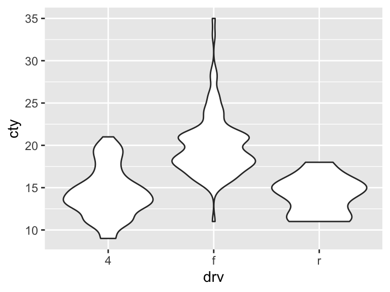

In this experiment, you will recreate three different plots using R’s ggplot library. Before that, let’s do a quick intro on using ggplot and the code editor in this. To make a graph in ggplot this is the basic template:
ggplot(data = <DATA>) +
<GEOM_FUNCTION>(mapping = aes(<MAPPINGS>))where <DATA> is the dataframe, <GEOM_FUNCTION> is the type of plot and <MAPPINGS> are the x and y variables. Let’s look at an example with the mpg dataset. This dataset is fuel economy data from 1999 and 2008 for 38 popular models of car:
Here is an example of a scatterplot of mpg data, where we look at the relationship between displ (x) and hwy (y). Execute the following by clicking on “Run Code” (if you ever want to reset code, click “Start over”):
ggplot(data = mpg) +
geom_point(mapping = aes(x = displ, y = hwy))Going back to our template, note the following:
<DATA> is replaced with mpg<GEOM_FUNCTION> is replaced with geom_point for scatterplot*<MAPPINGS> is replaced with x = displ, y = hwy, our x and y variables*Keep in mind that you can use multiple geom functions.
Click on the ‘Next Topic’ button to move on to your Task 1.
Using the same data mpg as before:
Recreate the following plot:

Once you are done or if you would like to move on, notify the experimenter you are ready for Task 2.